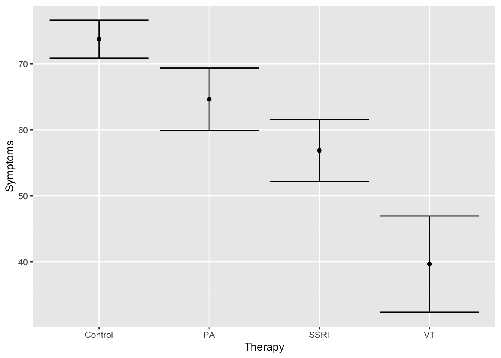
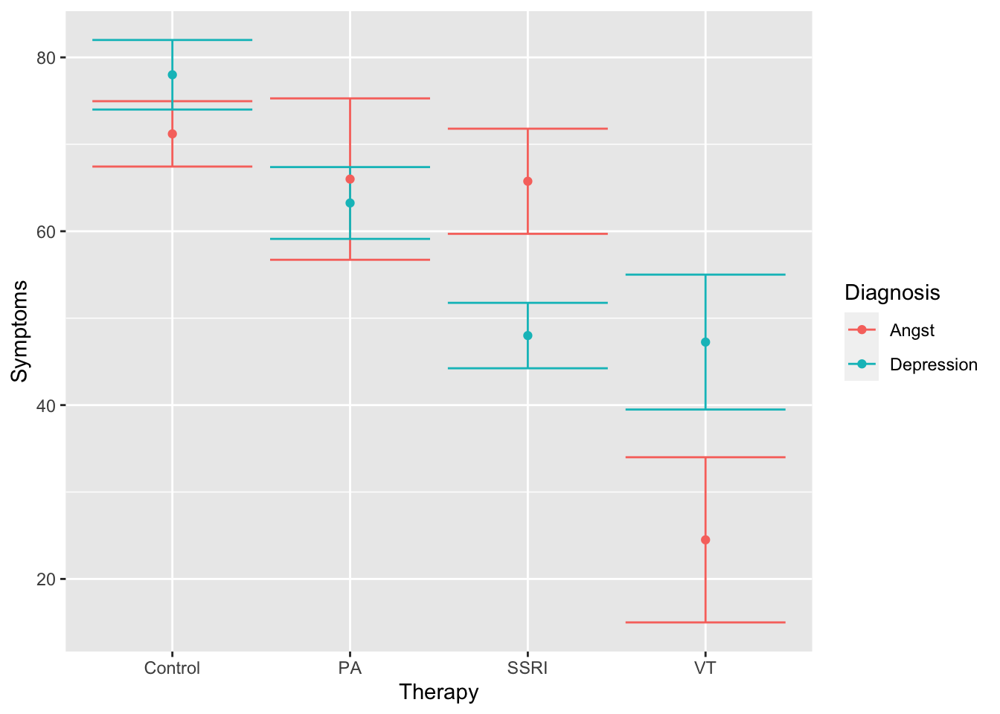

Kapitel 15 ANOVA
Die ANOVA (Analysis of variance, dt. Varianzanalyse) ist ein weiterer Signifikanztest. Mit der ANOVA können wir Prüfen, ob eine unabhängige Variable (UV) einen signifikanten Anteil Varianz der abhängigen Variable erklärt (AV). Die UVs nennen wir bei der ANOVA i.d.R. Faktor.
Statistisch ist die ANOVA ein F-Test (Varianzquotient).
15.1 Einfaktorielle ANOVA
Wir nutzen die ANOVA besonders gerne, wenn wir eine numerische AV und einen kategorialen Faktor mit \(>2\) Stufen haben.
Ein Beispiel wäre der Vergleich der Stärke von Symptomen, die Patient:innen nach einer Therapie haben. Klinisch wäre es wünschenswert, dass die Symptomstärke nach der Therapie möglichst gering ausfällt.
Laden wir uns einen fiktiven Datensatz herunter, der dieses Szenario wiederspiegelt:
therapy = read.csv("https://raw.githubusercontent.com/stephangoerigk/WAF_Folien/master/therapy4groups.csv")[,2:5]
summary(therapy)## X Therapy Symptoms Diagnosis
## Min. : 1.00 Control:8 Min. :15.0 Angst :15
## 1st Qu.: 8.25 PA :8 1st Qu.:48.5 Depression:15
## Median :15.50 SSRI :8 Median :61.0
## Mean :15.50 VT :6 Mean :60.0
## 3rd Qu.:22.75 3rd Qu.:70.0
## Max. :30.00 Max. :90.0In diesem Datensatz repräsentiert jede Zeile eine Patient:in mit einer Depression bzw. Angststörung, die mit einer von 4 Therapien behandelt wurde:
- SSRI = ein Antidepressivum (Selektive Serotoninwiederaufnahmehemmer)
- VT = Verhaltenstherapie
- PA = Psychoanalyse
- Control = Kontrollbedingung (keine Therapie)
Die Therapie (UV) ist also ein Faktor mit 4 Stufen.
Eine denkbare Forschungsfrage könnte wie folgt lauten:
Nach welcher Therapie haben die Patient:innen die schwächsten Symptome?
15.1.1 \(\alpha\)-Fehler Kumulierung
In unserem Beispiel mit 4 Gruppen könnten wir den t-Test nicht verwenden, da dieser max. 2 Mittelwerte vergleicht. Intuitiv könnte man sich überlegen, statt eines t-Tests einfach insgesamt 6 t-Tests zu rechnen, um alle Vergleiche abzudecken (SSRI vs. VT, VT vs. PA, …). Was uns daran hindert, ist die sogenannte \(\alpha\)-Fehler Kumulierung.
Unter Annahme eines Signifikanzniveaus von \(\alpha=.05\) erlauben wir uns 5% Wahrscheinlichkeit einen Fehler 1. Art zu begehen (fälschlicherweise die \(H_1\) anzunehmen). Diese 5% Fehlerwahrscheinlichkeit besteht jedoch bei jedem einzelnen t-Test \(\rightarrow\) Viele Tests, viele mögliche Fehlerentscheidungen!
Selbst bei 3 t-Tests steigt die Wahrscheinlichkeit für einen Fehler 1. Art mit \(0.05^3=0.14\) rasant auf 14% statt 5% an.
Um dieses Problem zu vermeiden rechenen wir die ANOVA, welche uns nicht alle Vergleiche einzeln, sondern die Signifikanz des gesamten Faktors auf einmal berechnet (Omnibus Test). Daraus folgt jedoch auch, dass die ANOVA als Signifikanztest Hypothesen immer ungerichtet testet.
15.1.2 Deskriptive Einordnung
Zunächst können wir uns die Deskriptivstatistiken innerhalb der 4 Gruppen einmal anschauen:
psych::describeBy(Symptoms ~ Therapy, data = therapy)##
## Descriptive statistics by group
## Therapy: Control
## vars n mean sd median trimmed mad min max range skew kurtosis se
## Symptoms 1 8 73.75 8.15 72.5 73.75 8.9 59 82 23 -0.39 -1.25 2.88
## ------------------------------------------------------------
## Therapy: PA
## vars n mean sd median trimmed mad min max range skew kurtosis
## Symptoms 1 8 64.62 13.38 62 64.62 11.12 47 90 43 0.54 -0.93
## se
## Symptoms 4.73
## ------------------------------------------------------------
## Therapy: SSRI
## vars n mean sd median trimmed mad min max range skew kurtosis se
## Symptoms 1 8 56.88 13.3 54 56.88 12.6 39 80 41 0.36 -1.29 4.7
## ------------------------------------------------------------
## Therapy: VT
## vars n mean sd median trimmed mad min max range skew kurtosis
## Symptoms 1 6 39.67 17.85 38 39.67 12.6 15 68 53 0.22 -1.32
## se
## Symptoms 7.29Rein deskriptiv lässt sich bereits feststellen, dass Patient:innen nach der VT die niedrigsten Symptome aufweisen (M [SD]=39.67 [17.85]), gefolgt von SSRI (M [SD]=56.88 [13.3]), PA (M [SD]=64.62 [13.38]) und Control (M [SD]=73.75 [8.15]).
Die Gruppenunterschiede lassen sich auch graphisch gut darstellen:
ggplot(data = therapy, aes(x = Therapy, y = Symptoms)) +
stat_summary(fun.data = mean_se, geom = "errorbar") +
stat_summary(geom = "point", fun = mean) 
Ob sich die numerischen Unterschiede sich auch als signifikant erweisen, prüfen wir mit der ANOVA.
15.1.3 Berechnung der ANOVA
Die einfaktorielle ANOVA lässt sich in R auf zwei Arten berechnen, die beide zu dem exakt selben Ergebnis kommen.
- eingebaute
lm()Funktion gefolgt vonanova() aov_ez()Funktion aus demafexPaket
15.1.3.1 Berechnung mittels lm()
Die lm() Funktion ist eine der gebräuchlichsten in der Statistik überhaupt. Sie ist nach dem Allgemeinen linearen Modell benannt (linear model) und wird beispielsweise auch zur Berechnung der Regression verwendet.
Das lineare Modell wird wie folgt aufgestellt (Formelformat):
mod = lm(Symptoms ~ Therapy, data = therapy)In der Formel steht links immer die AV (Symptoms). Die ~ Symbol heißt soviel wie “wird vorhergesagt durch”. Auf der rechten Seite steht die UV (Therapy).
Um das Ergebnis der ANOVA (den F-Test) zu erhalten, müssen wir die Funktion anova() auf das erstellte Modell anwenden
anova(mod)## Analysis of Variance Table
##
## Response: Symptoms
## Df Sum Sq Mean Sq F value Pr(>F)
## Therapy 3 4242.4 1414.14 8.078 0.0005766 ***
## Residuals 26 4551.6 175.06
## ---
## Signif. codes: 0 '***' 0.001 '**' 0.01 '*' 0.05 '.' 0.1 ' ' 1Wir erhalten den Output der ANOVA mit allen relevanten Zahlen:
- Df = Freiheitsgrade (VORSICHT der F-Test hat 2x df \(\rightarrow\) Zähler-/ und Nennerfreiheitsgrade)
- F-Wert = Teststatistik (könnte in F-Tabelle nachgesehen werden)
- p-Wert \(\rightarrow\) entscheidend dafür, ob ANOVA signifikant ist
Die Entscheidungsregel ist uns bereits bekannt: Ist der p-Wert (hier \(p=0.0005766\)) kleiner als \(\alpha=.05\) ist der Test signifikant. Das ist hier der Fall. Das ganze Ergebnis schreibt man i.d.R. wie folgt: \(F_{3,26}=8.08, p<.001\).
15.1.3.2 Berechnung mittels aov_ez()
Die Berechnung mit der aov_ez() Funktion erfolgt analog, nur wird die Formel etwas anders geschrieben.
Wir legen genau fest, was unsere AV ist dv. Zudem brauchen wir eine Variable, die jede Zeile eindeutig einem Individuum zuordnet id.
Die Faktoren (UVs) werden mit einem der beiden folgenden Argumente angegeben:
between(Zwischensubjektfaktoren)within(Innersubjektfaktoren)
Faktoren, die unter between angegeben werden, sind unabhängige Messungen, also Variablen die einen Gruppenvergleich möglich machen. Faktoren, die unter within angegeben werden, sind abhängige Messungen, also beispielsweise mehrere Messzeitpunkte derselben Person.
In unserem Fall liegt ein Gruppenvergleich vor (jede Person hat jeweils nur eine der Therapien erhalten), daher nutzen wir between. Für id nutzen wir einfach die Variable X, die einen Patientencode für jede Person enthält.
library(afex)
mod = aov_ez(dv = "Symptoms", between = c("Therapy"), id = "X", data = therapy)
mod## Anova Table (Type 3 tests)
##
## Response: Symptoms
## Effect df MSE F ges p.value
## 1 Therapy 3, 26 175.06 8.08 *** .482 <.001
## ---
## Signif. codes: 0 '***' 0.001 '**' 0.01 '*' 0.05 '+' 0.1 ' ' 1Wie wir sehen, wird der Schritt des Aufstellens des linearen Modells hier übersprungen und direkt die ANOVA (F-Test) gerechnet. Das Ergebnise ist jedoch identisch.
15.1.4 Interpretation
Die ANOVA ist in unserem Beispiel signifikant geworden. Dies gibt uns die Information, dass der Faktor Therapie einen signifikanten Anteil der Varianz unserer AV (Symptoms) erklären kann. Anders gesagt: Es scheinen hinsichtlich der Symptomatik Unterschiede zwischen den Gruppen zu bestehen.
Aus dem signifikanten Ergebnis der ANOVA können wir jedoch nicht erkennen, zwischen welchen der Gruppen die Unterschiede genau bestehen. Wir wissen es gibt einen Effekt, nur nicht wo er liegt.
Aus diesem Grund folgt auf die Berechnung der ANOVA ein zweiter Schritt, um mittels paarweisen Vergleichen zu prüfen, wo die Unterschiede liegen. Diese paarweisen Vergleiche nennt man auch Post-hoc Tests
15.1.5 Post-hoc Tests
Post-hoc Tests erlauben uns genau zu sehen, welche der Stufen unserer UV sich unterscheiden. In diesem Sinne sind sie nichts anderes als nachgeschaltete t-Tests, die 2 Gruppen miteinander vergleichen.
Wir berechnen Post-hoc Tests mit der emmeans() Funktion aus dem gleichnamigen emmeans Paket. Die Abkürzung emmeans bedeuted “estimated marginal means”, was soviel bedeutet wie die Mittelwerte des Modells innerhalb der Faktorstufen zu vergleichen.
Die emmeans() Funktion kann man sowohl nach der ANOVA mit lm() als auch nach der ANOVA mit aov_ez() verwenden.
library(emmeans)
emmeans(mod, pairwise ~ Therapy)## $emmeans
## Therapy emmean SE df lower.CL upper.CL
## Control 73.8 4.68 26 64.1 83.4
## PA 64.6 4.68 26 55.0 74.2
## SSRI 56.9 4.68 26 47.3 66.5
## VT 39.7 5.40 26 28.6 50.8
##
## Confidence level used: 0.95
##
## $contrasts
## contrast estimate SE df t.ratio p.value
## Control - PA 9.12 6.62 26 1.379 0.5230
## Control - SSRI 16.88 6.62 26 2.551 0.0752
## Control - VT 34.08 7.15 26 4.770 0.0003
## PA - SSRI 7.75 6.62 26 1.171 0.6497
## PA - VT 24.96 7.15 26 3.493 0.0088
## SSRI - VT 17.21 7.15 26 2.408 0.1004
##
## P value adjustment: tukey method for comparing a family of 4 estimatesMit dem pairwise Argument sagen wir der emmeans() Funktion zwischen welchen Gruppen die Mittelwertsvergleiche durchgeführt werden sollen.
Der Output der emmeans() Funktion hat 2 Teile
- $emmeans (oberer Teil: hier werden praktischerweise die verglichenen Mittelwerte noch einmal ausgerechnet)
- $contrasts (unterer Teil: hier werden die Ergebnisse der Post-hoc Tests gezeigt)
Die Interpretation des Ergebnisses ist uns bereits bekannt. Jeder Vergleich erhält einen t-Wert und einen p-Wert, anhand dessen wir ablesen können, ob der Gruppenunterschied signifikant war.
Der Mittelwert der Gruppe VT war signifikant niedriger als der in der Kontrollgruppe \((t_{26}=4.77,p=.0003)\) und als der in der PA Gruppe \((t_{26}=3.49,p=.0088)\). Die anderen Vergleiche waren nicht signifikant.
15.1.5.1 Korrektur für multiples Testen
Nun haben wir im Abschnitt über die \(\alpha\)-Fehler Kumulierung bereits erfahren, dass das Durchführen vieler Vergleiche problematisch sein kann, da es die Wahrscheinlichkeit erhöht, einen Fehler 1. Art zu begehen.
Post-hoc Tests lösen dieses Problem durch eine Korrektur des p-Werts. Je mehr Vergleiche gemacht werden, desto mehr wird er nach oben korrigiert. Automatisch wendet emmeans() die sogenannte Tukey-Korrektur an (ganz unten im Output sichtbar).
Zwei weitere Korrekturen sind gängig, die etwas strengere Bonferroni-Korrektur und die etwas weniger strenge Benjamini-Hochberg Korrektur (auch false-dicovery-rate Korrektur - FDR genannt).
Wollen wir die Korrekturmethode ändern, lässt sich das leicht über das adjust Argument erreichen:
emmeans(mod, pairwise ~ Therapy, adjust = "bonferroni")## $emmeans
## Therapy emmean SE df lower.CL upper.CL
## Control 73.8 4.68 26 64.1 83.4
## PA 64.6 4.68 26 55.0 74.2
## SSRI 56.9 4.68 26 47.3 66.5
## VT 39.7 5.40 26 28.6 50.8
##
## Confidence level used: 0.95
##
## $contrasts
## contrast estimate SE df t.ratio p.value
## Control - PA 9.12 6.62 26 1.379 1.0000
## Control - SSRI 16.88 6.62 26 2.551 0.1019
## Control - VT 34.08 7.15 26 4.770 0.0004
## PA - SSRI 7.75 6.62 26 1.171 1.0000
## PA - VT 24.96 7.15 26 3.493 0.0104
## SSRI - VT 17.21 7.15 26 2.408 0.1405
##
## P value adjustment: bonferroni method for 6 testsWir sehen, dass die etwas strengere Bonferroni-Korrektur die p-Werte vergleichsweise höher werden lässt, als mit der Tukey-Korrektur. Es ist also für den p-Wert schwieriger, unter das Signifikanznivea \(\alpha=.05\) zu kommen.
Mit der Benjamini-Hochberg Korrektur sind die Anpassungen weniger streng:
emmeans(mod, pairwise ~ Therapy, adjust = "fdr")## $emmeans
## Therapy emmean SE df lower.CL upper.CL
## Control 73.8 4.68 26 64.1 83.4
## PA 64.6 4.68 26 55.0 74.2
## SSRI 56.9 4.68 26 47.3 66.5
## VT 39.7 5.40 26 28.6 50.8
##
## Confidence level used: 0.95
##
## $contrasts
## contrast estimate SE df t.ratio p.value
## Control - PA 9.12 6.62 26 1.379 0.2155
## Control - SSRI 16.88 6.62 26 2.551 0.0340
## Control - VT 34.08 7.15 26 4.770 0.0004
## PA - SSRI 7.75 6.62 26 1.171 0.2520
## PA - VT 24.96 7.15 26 3.493 0.0052
## SSRI - VT 17.21 7.15 26 2.408 0.0351
##
## P value adjustment: fdr method for 6 tests15.2 Mehrfaktorielle ANOVA
Mit der ANOVA haben wir die Möglichkeit, die Effekte mehrere UVs (Faktoren) auf die AV zu untersuchen.
Wir prüfen dann letztlich 3 Hypothesen (bei 2 UVs)
- Haupteffekt des 1. Faktors
- Haupteffekt des 2. Faktors
- Interaktionseffekt beider Faktoren
In unserem Beispiel könnte es interessant sein, zusätzlich zur erhaltenen Therapie zu berücksichtigen, welche Diagnose die Patienten hatten.
Unsere Fragestellung würde sich um 2 weitere Aspekte erweitern:
- Nach welcher Therapie haben die Patient:innen die schwächsten Symptome? (hatten wir bereits - Haupteffekt Therapie)
- Welche Diagnose hatte die schwächsten Symptome? (Haupteffekt Diagnose)
- Gibt es, je nachdem welche Diagnose die Patienten hatten, Unterschiede in der Wirksamkeit der Therapie? (Interaktioniseffekt)
15.2.1 Deskriptive Einordnung
Zunächst können wir uns die Deskriptivstatistiken innerhalb der Gruppen einmal anschauen:
psych::describeBy(Symptoms ~ Therapy * Diagnosis, data = therapy)##
## Descriptive statistics by group
## Therapy: Control
## Diagnosis: Angst
## vars n mean sd median trimmed mad min max range skew kurtosis se
## Symptoms 1 5 71.2 8.41 70 71.2 7.41 59 82 23 -0.17 -1.56 3.76
## ------------------------------------------------------------
## Therapy: PA
## Diagnosis: Angst
## vars n mean sd median trimmed mad min max range skew kurtosis
## Symptoms 1 4 66 18.57 63.5 66 17.05 47 90 43 0.25 -2.01
## se
## Symptoms 9.28
## ------------------------------------------------------------
## Therapy: SSRI
## Diagnosis: Angst
## vars n mean sd median trimmed mad min max range skew kurtosis
## Symptoms 1 4 65.75 12.09 66 65.75 12.6 51 80 29 -0.04 -1.96
## se
## Symptoms 6.05
## ------------------------------------------------------------
## Therapy: VT
## Diagnosis: Angst
## vars n mean sd median trimmed mad min max range skew kurtosis se
## Symptoms 1 2 24.5 13.44 24.5 24.5 14.08 15 34 19 0 -2.75 9.5
## ------------------------------------------------------------
## Therapy: Control
## Diagnosis: Depression
## vars n mean sd median trimmed mad min max range skew kurtosis se
## Symptoms 1 3 78 6.93 82 78 0 70 82 12 -0.38 -2.33 4
## ------------------------------------------------------------
## Therapy: PA
## Diagnosis: Depression
## vars n mean sd median trimmed mad min max range skew kurtosis se
## Symptoms 1 4 63.25 8.26 62 63.25 7.41 55 74 19 0.27 -2.02 4.13
## ------------------------------------------------------------
## Therapy: SSRI
## Diagnosis: Depression
## vars n mean sd median trimmed mad min max range skew kurtosis se
## Symptoms 1 4 48 7.53 48 48 8.15 39 57 18 0 -1.98 3.76
## ------------------------------------------------------------
## Therapy: VT
## Diagnosis: Depression
## vars n mean sd median trimmed mad min max range skew kurtosis
## Symptoms 1 4 47.25 15.52 45 47.25 12.6 31 68 37 0.3 -1.9
## se
## Symptoms 7.76Der * zwischen den Faktoren bedeutet “Interaktion” und führt dazu, dass alle Stufenkombinationen der beiden Variablen exploriert werden.
Die Gruppenunterschiede lassen sich auch graphisch gut darstellen:
ggplot(data = therapy, aes(x = Therapy, y = Symptoms, colour = Diagnosis)) +
stat_summary(fun.data = mean_se, geom = "errorbar") +
stat_summary(geom = "point", fun = mean) 
15.2.2 Berechnung der ANOVA
15.2.2.1 Berechnung mittels lm()
Die Vorgehensweise ist dieselbe wie bei der einfaktoriellen ANOVA. Die Formel wird lediglich durch die Interaktion mit der 2. UV erweitert.
mod = lm(Symptoms ~ Therapy * Diagnosis, data = therapy)
anova(mod)## Analysis of Variance Table
##
## Response: Symptoms
## Df Sum Sq Mean Sq F value Pr(>F)
## Therapy 3 4242.4 1414.14 9.9411 0.0002439 ***
## Diagnosis 1 0.6 0.60 0.0042 0.9487141
## Therapy:Diagnosis 3 1421.4 473.81 3.3308 0.0381543 *
## Residuals 22 3129.6 142.25
## ---
## Signif. codes: 0 '***' 0.001 '**' 0.01 '*' 0.05 '.' 0.1 ' ' 1Der Output der ANOVA erweitert sich im Vergleich zur einfaktoriellen ANOVA um 2 Zeilen. Die mit Therapy und Diagnosis betitelten Zeilen sind die Haupteffekte. Die 3. Zeile Therapy:Diagnosis ist der Interaktionseffekt.
Da wir mit der 2-faktoriellen ANOVA letztlich 3 Hypothesen prüfen, gibt es auch 3 p-Werte, die alle entweder signifikante oder nicht-signifikant sein können.
15.2.2.2 Berechnung mittels aov_ez()
Auch für die aov_ez() Funktion ähnelt das Vorgehen dem der einfaktoriellen ANOVA. Hier wird die Liste der UVs lediglich um den 2. Faktor erweitert, die Interaktion wird automatisch mitberechnet. Das Ergebnis ist analog zur lm() Funktion.
library(afex)
mod = aov_ez(dv = "Symptoms", between = c("Therapy", "Diagnosis"), id = "X", data = therapy)
mod## Anova Table (Type 3 tests)
##
## Response: Symptoms
## Effect df MSE F ges p.value
## 1 Therapy 3, 22 142.25 11.60 *** .613 <.001
## 2 Diagnosis 1, 22 142.25 0.25 .011 .621
## 3 Therapy:Diagnosis 3, 22 142.25 3.33 * .312 .038
## ---
## Signif. codes: 0 '***' 0.001 '**' 0.01 '*' 0.05 '+' 0.1 ' ' 115.2.3 Interpretation
Die beiden Haupteffekte und der Interaktionseffekt können einzeln interpretiert werden. Wir gehen der Reihe nach:
15.2.3.1 Haupteffekt 1
Der Haupteffekt von Therapy spiegelt im Wesentlichen das Ergebnis wieder, welches wir bereits von der einfaktoriellen ANOVA kennen. Es handelt sich um den Effekt der Therapie, wenn man den Effekt der 2. UV (Diagnosis) außer Acht lässt.
Der Haupteffekt ist signifikant bei \(F_{(3,22)}=9.94, p<.001\). Wir können schlussfolgern, dass es einen Unterschied zwischen den Diagnosen gibt. Wo die Unterschiede genau liegenm, können wir mit den Post-hoc Tests bestimmen, wie oben bereits geschehen.
15.2.3.2 Haupteffekt 2
Der Haupteffekt von Diagnosis ist nichts anderes als ein unabhängiger t-Test. Es handelt sich um den Effekt der Diagnose, wenn man den Effekt der 1. UV (Therapy) außer Acht lässt. Dieser Haupteffekt ist nicht signifikant \(F_{(1,22)}=0.004, p<.949\). Über alle Therapien hinweg scheint es keinen Unterschied in der Symptomatik der Patient:innen mit Depressionen und Angststörungen zu geben.
15.2.3.3 Interaktionseffekt
Der Interaktionseffekt von Therapy * Diagnosis prüft, ob der Effekt der Therapie in beiden Diagnosen unterschiedlich wirkt.
Er ist somit eine Möglichkeit den “kombinierten Effekt” der beiden Variablen zu prüfen.
Der Interaktionseffekt ist signifikant \(F_{(3,22)}=3.33, p<.038\). Entsprechend scheinen die Patient:innen nach den Therapien unterschiedlich wenige Symptome zu haben, je nachdem welche Diagnose sie hatten.
Um diesen Effekt inhaltlich zu verstehen, empfiehlt sich ein Blick auf die Graphik, in Kombination mit Post-Hoc Tests.
15.2.4 Post-hoc Tests
Zum Verständnis der Effekte führen wir Post-Hoc Tests durch. Allerdings wollen wir uns den Effekt der Therapie diesmal getrennt für die Diagnosen ansehen.
library(emmeans)
emmeans(mod, pairwise ~ Therapy|Diagnosis)## $emmeans
## Diagnosis = Angst:
## Therapy emmean SE df lower.CL upper.CL
## Control 71.2 5.33 22 60.14 82.3
## PA 66.0 5.96 22 53.63 78.4
## SSRI 65.8 5.96 22 53.38 78.1
## VT 24.5 8.43 22 7.01 42.0
##
## Diagnosis = Depression:
## Therapy emmean SE df lower.CL upper.CL
## Control 78.0 6.89 22 63.72 92.3
## PA 63.2 5.96 22 50.88 75.6
## SSRI 48.0 5.96 22 35.63 60.4
## VT 47.2 5.96 22 34.88 59.6
##
## Confidence level used: 0.95
##
## $contrasts
## Diagnosis = Angst:
## contrast estimate SE df t.ratio p.value
## Control - PA 5.20 8.00 22 0.650 0.9144
## Control - SSRI 5.45 8.00 22 0.681 0.9031
## Control - VT 46.70 9.98 22 4.680 0.0006
## PA - SSRI 0.25 8.43 22 0.030 1.0000
## PA - VT 41.50 10.33 22 4.018 0.0030
## SSRI - VT 41.25 10.33 22 3.994 0.0032
##
## Diagnosis = Depression:
## contrast estimate SE df t.ratio p.value
## Control - PA 14.75 9.11 22 1.619 0.3889
## Control - SSRI 30.00 9.11 22 3.293 0.0162
## Control - VT 30.75 9.11 22 3.376 0.0134
## PA - SSRI 15.25 8.43 22 1.808 0.2962
## PA - VT 16.00 8.43 22 1.897 0.2580
## SSRI - VT 0.75 8.43 22 0.089 0.9997
##
## P value adjustment: tukey method for comparing a family of 4 estimatesWir sehen, dass die Symptome nach SSRI insbesondere in der Gruppe der depressiven Patient:innen reduziert sind. Zudem sind die Symtome nach der VT deutlich reduziert (insbesondere bei Angststörungen).
Dies führt dazu, dass die VT (in dieser Stichprobe) in der Behandlung von Angststörungen der Kontrollgruppe \((t_{(22)}=4.68, p<.001)\), der Psychoanalyse \((t_{(22)}=4.02, p=.003)\) und den SSRI \((t_{(22)}=3.99, p=.003)\) überlegen war. In der Behandlung von Angststörungen waren sowohl SSRI \((t_{(22)}=3.29, p=.016)\) als auch VT \((t_{(22)}=3.38, p=.013)\) besser als die Kontrollgruppe, unterschieden sich jedoch nicht signifikant von der Psychoanalyse und auch nicht voneinander.
15.3 Prüfen der Voraussetzungen von ANOVAs
Wie alle statistischen Modelle haben ANOVAs eine Reihe von Annahmen, die für gültige Schlussfolgerungen gelten sollten. Diese Annahmen sind:
Beobachtungen sind i.i.d.: i.i.d. steht für “unabhängig und identisch verteilt”. Unabhängig bedeutet, dass die bedingten Beobachtungen (d.h. Residuen) unabhängig voneinander sind (d.h. das Wissen des Wertes eines Residuums erlaubt keine Rückschlüsse auf den Wert eines anderen Residuums). Identisch verteilt bedeutet, dass alle Beobachtungen durch denselben Daten-generierenden Prozess erzeugt werden.
Homogenität der Varianzen: Die Varianzen über alle Gruppen (Zellen) der zwischen-Subjekt-Effekte sind gleich.
Sphärizität: Bei innerhalb-Subjekt-Effekten ist die Sphärizität die Bedingung, dass die Varianzen der Unterschiede zwischen allen möglichen Paaren von innerhalb-Subjekt-Bedingungen (d.h. Levels der unabhängigen Variablen) gleich sind. Dies kann als eine innerhalb-Subjekt-Version der Homogenität der Varianzen-Annahme betrachtet werden.
Normalverteilung der Residuen: Die Fehler, die für die Schätzung des Fehlerterms (MSE) verwendet werden, sind normalverteilt.
Die wichtigste Annahme ist im Allgemeinen die i.i.d.-Annahme (d.h. wenn sie nicht erfüllt ist, sind die Schlussfolgerungen wahrscheinlich ungültig), insbesondere der unabhängige Teil. Diese Annahme kann nicht empirisch getestet werden, sondern muss auf konzeptuellen oder logischen Gründen beruhen. Zum Beispiel stammen in einem idealen vollständig zwischen den Probanden durchgeführten Design jede Beobachtung von einem anderen Probanden, der zufällig aus einer Population ausgewählt wird, so dass wir wissen, dass alle Beobachtungen unabhängig sind. Oft sammeln wir jedoch mehrere Beobachtungen von demselben Probanden in einem innerhalb der Probanden oder wiederholten Messungen-Design. Um sicherzustellen, dass die i.i.d.-Annahme in diesem Fall erfüllt ist, müssen wir eine ANOVA mit innerhalb der Probanden Faktoren angeben. Wenn wir jedoch einen Datensatz mit mehreren Quellen von Nicht-Unabhängigkeit haben - wie Teilnehmern und Items - können ANOVA-Modelle nicht verwendet werden, sondern wir müssen ein gemischtes Modell verwenden.
Die anderen Annahmen können empirisch getestet werden, entweder graphisch oder mit statistischen Annahmetests. Es gibt jedoch unterschiedliche Meinungen darüber, wie nützlich statistische Annahmetests sind, wenn sie automatisch für jede ANOVA durchgeführt werden. Obwohl dies in einigen Statistikbüchern vertreten wird, besteht die Gefahr, dass die statistische Analyse auf ein “Kochbuch” oder “Flussdiagramm” reduziert wird. Die Datenanalyse in der Realität ist oft komplexer als solche einfachen Regeln. Es ist daher oft produktiver, die Daten mit Hilfe von deskriptiven Statistiken und grafischen Darstellungen zu erkunden. Diese Datenexploration sollte es ermöglichen, zu beurteilen, ob die anderen ANOVA-Annahmen in ausreichendem Maße erfüllt sind. Zum Beispiel ermöglicht es das Plotten der ANOVA-Ergebnisse mit afex_plot und einer vernünftigen Darstellung der einzelnen Datenpunkte oft, sowohl die Homogenität der Varianz als auch die Normalverteilung der Residuenannahme zu beurteilen.
Lassen Sie uns nun alle drei empirisch testbaren Annahmen im Detail betrachten. ANOVAs sind oft robust gegen leichte Verletzungen der Annahme der Homogenität der Varianzen. Wenn diese Annahme jedoch deutlich verletzt ist, haben wir etwas Wichtiges über die Daten gelernt, nämlich Varianzheterogenität, die weitere Untersuchungen erfordert. Einige weitere statistische Lösungen werden unten diskutiert.
Wenn das Hauptziel einer ANOVA darin besteht, zu sehen, ob bestimmte Effekte signifikant sind oder nicht, dann ist die Annahme der Normalverteilung der Residuen nur für kleine Stichproben erforderlich, dank des zentralen Grenzwertsatzes. Wie von Lumley et al. (2002) gezeigt, sind selbst extreme Verletzungen der Normalitätsannahmen bei Stichproben von ein paar hundert Probanden unproblematisch. Daher sind leichte Verletzungen dieser Annahme unproblematisch.
Eine angemessene explorative Datenanalyse oft besser ist als die blindes Anwenden von statistischen Annahmetests. Dennoch sind Annahmetests natürlich ein wichtiges Werkzeug im statistischen Werkzeugkasten und können in vielen Situationen hilfreich sein.
15.3.1 Testen der empirisch testbaren Annahmen
afexverfügt über eine Reihe von integrierten Funktionen, um bei der Überprüfung der Annahmen des ANOVA-Designs zu helfen.
- Die Varianzen über alle Gruppen (Zellen) der zwischen-subjektiven Effekte sind gleich. Dies kann mit performance::check_homogeneity() getestet werden.
- Sphärizität: Für innerhalb-subjektive Effekte ist die Sphärizität die Bedingung, bei der die Varianzen der Unterschiede zwischen allen möglichen Paaren von innerhalb-subjektiven Bedingungen (d.h. Stufen der unabhängigen Variable) gleich sind. Dies kann als eine innerhalb-subjektive Version der Homogenität der Varianzen betrachtet werden und kann mit performance::check_sphericity() getestet werden.
- Normalität der Residuen: Die für die Schätzung des Fehlerterms (MSE) verwendeten Fehler sind normal verteilt. Dies kann mit performance::check_normality() abgeleitet werden.
library(afex)
library(performance) # für die Voraussetzungsprüfung15.3.2 Homogenität der Varianzen:
Diese Annahme besagt für Zwischen-Gruppen-Designs, dass die Fehler innerhalb der Gruppen eine gemeinsame Varianz um den Mittelwert der Gruppe aufweisen.
15.3.2.1 Test
Dies kann mit dem Levene-Test getestet werden:
data(obk.long, package = "afex")
mod <- aov_ez("id", "value", obk.long,
between = c("treatment", "gender"))## Warning: More than one observation per design cell, aggregating data using `fun_aggregate = mean`.
## To turn off this warning, pass `fun_aggregate = mean` explicitly.## Contrasts set to contr.sum for the following variables: treatment, gendercheck_homogeneity(mod)## OK: There is not clear evidence for different variances across groups (Levene's Test, p = 0.350).Diese Ergebnisse deuten darauf hin, dass die Homogenität nicht signifikant verletzt ist.
15.3.2.2 Maßnahmen wenn Vorraussetzung verletzt
ANOVAs sind im Allgemeinen robust gegenüber “leichter” Heteroskedastizität, aber es gibt verschiedene andere Methoden (die in afex nicht verfügbar sind), um robuste Fehlerabschätzungen zu erhalten.
Eine weitere Alternative besteht darin, diese Annahme ganz aufzugeben und Permutationstests (z.B. mit permuco) oder Bootstrap-Schätzungen (z.B. mit boot) zu verwenden.
15.3.3 Sphärizität:
15.3.3.1 Test
Wir können check_sphericity() verwenden, um den Mauchly-Test auf Sphärizität durchzuführen:
data("fhch2010", package = "afex")
mod <- aov_ez("id", "log_rt", fhch2010,
between = "task",
within = c("density", "frequency", "length", "stimulus"))## Warning: More than one observation per design cell, aggregating data using `fun_aggregate = mean`.
## To turn off this warning, pass `fun_aggregate = mean` explicitly.## Contrasts set to contr.sum for the following variables: taskcheck_sphericity(mod)## Warning in summary.Anova.mlm(object$Anova, multivariate = FALSE): HF eps > 1
## treated as 1## Warning: Sphericity violated for:
## - length:stimulus (p = 0.021)
## - task:length:stimulus (p = 0.021).Wir können sehen, dass beide Fehlerterme der Länge:Reiz und Aufgabe:Länge:Reiz-Interaktionen die Annahme der Sphärizität bei \(p = 0.021\) signifikant verletzen. Beachten Sie, dass Aufgabe als Faktor zwischen den Probanden gilt und dass beide Interaktionsterme denselben Fehlerterm teilen!
15.3.3.2 Maßnahmen wenn Vorraussetzung verletzt
Für ANOVA-Tabellen kann eine Korrektur der Freiheitsgrade verwendet werden - afex bietet sowohl die Greenhouse-Geisser (die standardmäßig verwendet wird) als auch die Hyunh-Feldt-Korrekturen an. Für Nachfolgekontraste mit emmeans kann ein multivariates Modell verwendet werden, das keine Sphärizität annimmt (dies wird seit afex 1.0 standardmäßig verwendet).
Beide können global festgelegt werden mit:
afex_options(
correction_aov = "GG", # or "HF"
emmeans_model = "multivariate"
)15.3.4 Normalverteilung der Residuen:
Die Normalverteilungsannahme der Restfehler bezieht sich auf die Fehler, die die verschiedenen Fehlerterme in der ANOVA ausmachen. Obwohl der Shapiro-Wilk-Test verwendet werden kann, um von einer Normalverteilung abzuweichen, hat dieser Test tendenziell hohe Typ-I-Fehler-Raten. Stattdessen können die Restfehler visuell mit Quantil-Quantil-Plots (auch qq-Plots genannt) inspiziert werden. Zum Beispiel:
15.3.4.1 Test
data("stroop", package = "afex")
stroop1 <- subset(stroop, study == 1)
stroop1 <- na.omit(stroop1)
mod <- aov_ez("pno", "rt", stroop1,
within = c("condition", "congruency"))## Warning: More than one observation per design cell, aggregating data using `fun_aggregate = mean`.
## To turn off this warning, pass `fun_aggregate = mean` explicitly.is_norm <- check_normality(mod)
# plot(is_norm)# plot(is_norm, type = "qq")Wenn die Residuen normalverteilt wären, würden sie in der Nähe der diagonalen Linie liegen und innerhalb der 95%-Konfidenzbänder um die qq-Linie fallen.
Wir können das Diagramm weiter verbessern, indem wir den Trend entfernen und nicht den erwarteten Quantilwert, sondern die Abweichung vom erwarteten Quantilwert anzeigen, was dazu beitragen kann, visuelle Verzerrungen zu reduzieren.
# plot(is_norm, type = "qq", detrend = TRUE)15.3.4.2 Maßnahmen wenn Vorraussetzung verletzt
Wie bei der Annahme der Homogenität der Varianzen können wir auf Permutationstests für ANOVA-Tabellen und Bootstrap-Schätzungen / Kontraste zurückgreifen.
Eine weitere beliebte Lösung besteht darin, eine monotone Transformation der abhängigen Variablen anzuwenden. Dies sollte nicht leichtfertig getan werden, da es die Interpretierbarkeit der Ergebnisse (von der beobachteten Skala zur transformierten Skala) verändert. Glücklicherweise ist es üblich, Reaktionszeiten zu logarithmieren, was wir leicht tun können:
mod <- aov_ez("pno", "rt", stroop1,
transformation = "log",
within = c("condition", "congruency"))## Warning: More than one observation per design cell, aggregating data using `fun_aggregate = mean`.
## To turn off this warning, pass `fun_aggregate = mean` explicitly.is_norm <- check_normality(mod)
# plot(is_norm, type = "qq", detrend = TRUE)Sehr gut - nach der Transformation weichen die Residuen (auf der logarithmischen Skala) nicht mehr als erwartet von Fehlern ab, die aus einer normalverteilten Verteilung gezogen wurden (sie sind größtenteils innerhalb der 95%-Konfidenzintervalle enthalten)!